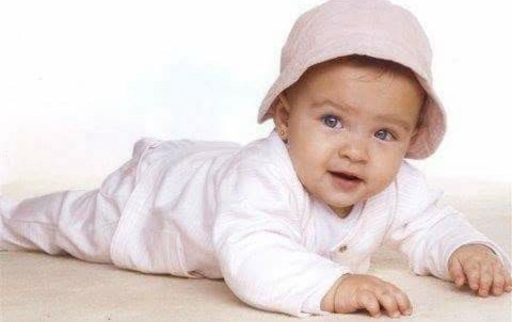
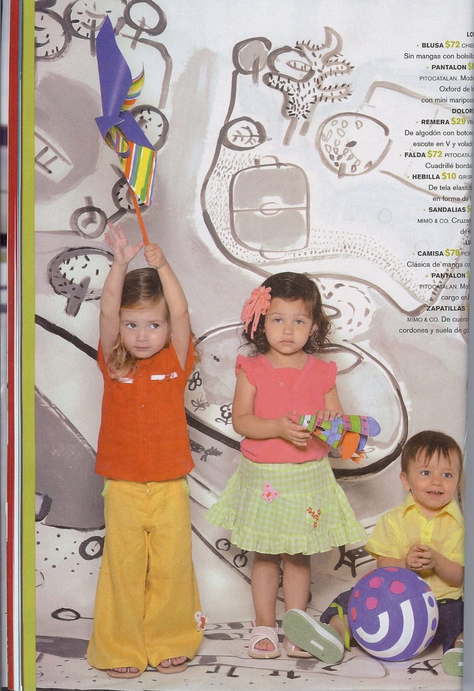
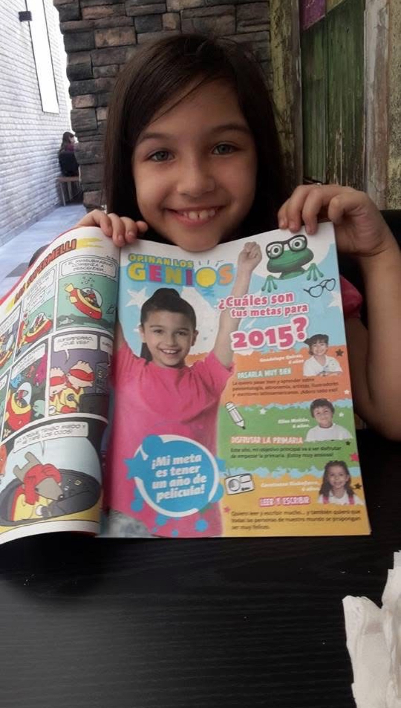
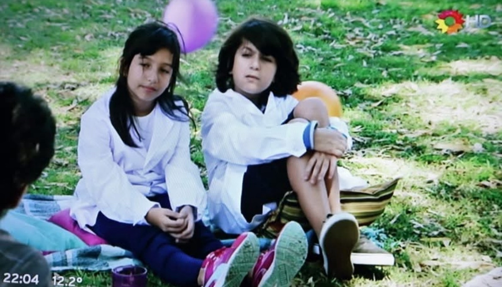
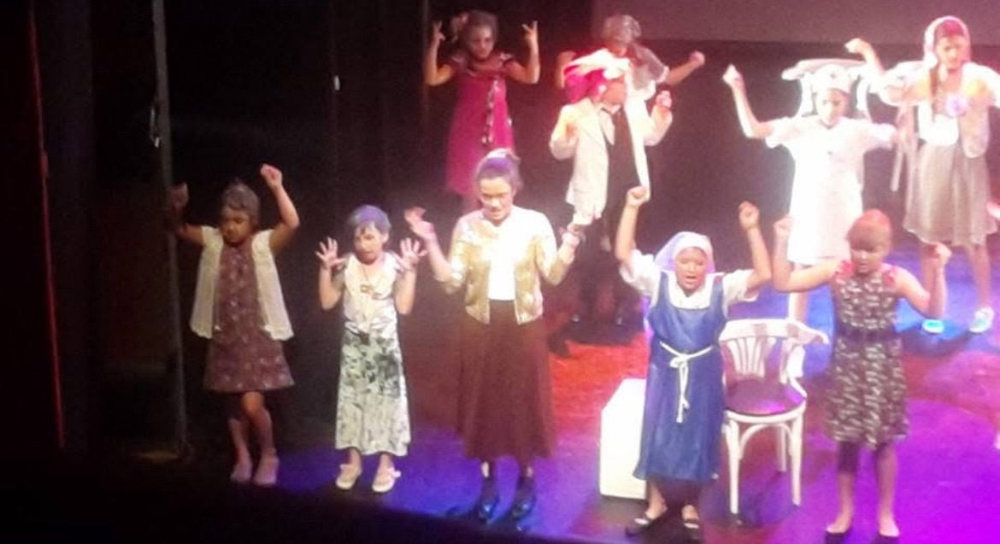

Mi nombre es Lola y tengo 19 años. Nací en Buenos Aires, Argentina. Soy una persona creativa y apasionada por aprender muchas cosas y crecer como persona.
Mi cumpleaños es el 14/06/2006, soy de Géminis
Actualmente estoy estudiando en el IFTS N°18 la carrera de Desarrollo de Software, ya que me interesa mucho el mundo de la tecnología y la programación desde que tengo 14 años.
Antes de conocer el rubro de sistemas, lo que me gustaba era el ambiente artístico en base a lo actoral. Debajo muestro varios proyectos que realicé!
8 meses - 14 años
Tengo un recorrido actoral desde que tengo ocho meses, mi primer trabajo fue participando para una gráfica para Cheeky, la marca de ropa

Luego estuve en varias revistas
 Salí en varias novelas, como alumna (presento los links de YouTube debajo)
Los ricos no piden permiso
100 días para enamorarse
También participé en varios comerciales! Mi favorito es el de Coca Cola, ya que tuve la oportunidad de ser co-protagonista!
Y obviamente no puede faltar el amor por el teatro
Personalmente el ambiente artístico me formó a ser una persona bastante abierta en base a su pensamiento, y sobre todo creativa! Por eso me es importante compartir ésto, ya que si no hubiese realizado nada de eso, sería una persona completamente introvertida.